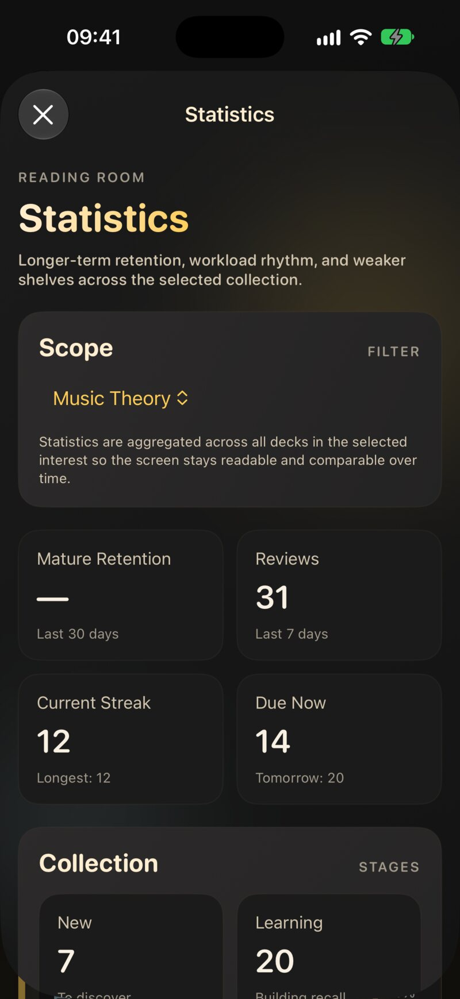
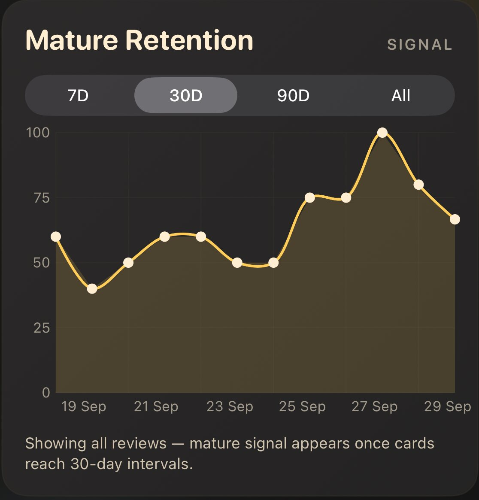
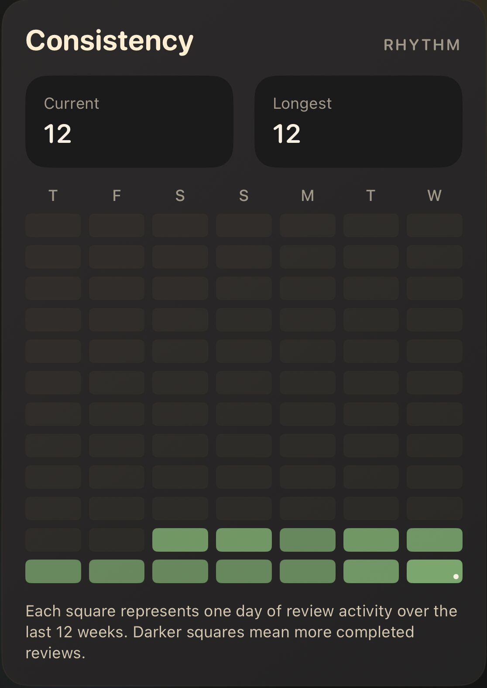

9.1 Čísla, která vidíš každý den
Abys věděl, jak se ti daří, obrazovku Statistiky nepotřebuješ. Po celé aplikaci se objevují tři čísla a všechna jsou zdarma.
| Číslo | Kde ho vidíš | Co znamená |
|---|---|---|
| K opakování | Dnes, řádky balíčků, seznam kartiček | Kartičky, jejichž datum dalšího opakování nastalo |
| Zvládnutí | Řádky zájmů a balíčků | Podíl kartiček, jejichž poslední hodnocení bylo Dobré nebo Snadné |
| Série | Dnes, jako „N dní v řadě“ | Dny v řadě s aspoň jedním opakováním |
9.1.1 K opakování
Kartička je na řadě, když uplynulo její naplánované datum opakování. Dnes sečte kartičky k opakování napříč všemi tvými zájmy, spolu s novými kartičkami, které den dovolí, a dá ti odhad jako „Přibližně 6 min“. Když není nic na řadě, Dnes řekne Vše hotovo a ukáže malý pruh Příštích 7 dní, takže vidíš, jaká práce tě zítra čeká. Tomu, jak se data opakování volí, se věnuje kapitola 6.
9.1.2 Zvládnutí
Zvládnutí balíčku spočítá každou kartičku, jejíž poslední hodnocení bylo Dobré nebo Snadné, a vydělí počtem kartiček v balíčku. Kartičky, které jsi nikdy neopakoval, se počítají také, jako zatím nezvládnuté, takže čerstvě importovaný balíček začíná na 0 %. Zvládnutí zájmu je průměr zvládnutí jeho balíčků, přičemž každý balíček váží stejně bez ohledu na velikost.
Protože se počítá jen poslední hodnocení, je zvládnutí momentka, ne trofej. Zmáčkni Znovu u kartičky, kterou jsi minulý týden znal, a ta kartička se přestane počítat, dokud ji zase nedáš správně. O to jde: číslo ti říká, co umíš dnes.
9.1.3 Série
Tvoje série počítá dny, kdy jsi zopakoval aspoň jednu kartičku. Jedna kartička stačí. Máš také den odkladu: pokud jsi dnes ještě neopakoval, včerejší série platí až do konce dne.
JustFlip! je shovívavý k občasnému vynechanému dni. Až dva vynechané dny uvnitř aktuální série se automaticky přemostí, takže jeden hektický den nesmaže měsíční návyk. Samotné přemostěné dny se do počtu nepřičítají. Chceš-li šťouchnutí, než série vyprší, zapni Záchrana série v Nastavení › Připomenutí. Pošle jedno večerní připomenutí, když jsi ten den ještě neopakoval.
9.2 Otevření Statistik (Pro)
Celá obrazovka Statistiky je funkce Pro. Otevřeš ji z nabídky Nastavení (ikona ozubeného kola) nahoře nad seznamem Zájmy a volbou Statistiky. Bez Pro má položka nabídky zámek a otevře místo toho obrazovku Pro. Odemkne ji i bezplatná zkušební verze Pro.

Statistiky se vždy dívají na jeden zájem najednou. Vyber ho nahoře v části Rozsah. Všechno pod tím, od souhrnných dlaždic po předpověď, sčítá všechny balíčky v tom zájmu. Díky tomu zůstávají čísla v čase srovnatelná. Chceš-li porovnat dva obory, přepínej výběr tam a zpět.
Obrazovka se po opakování obnoví sama, takže ji můžeš mít otevřenou na iPadu nebo Macu vedle studijního sezení.
9.2.1 Souhrnné dlaždice
| Dlaždice | Co ukazuje |
|---|---|
| Retence zralých kartiček | Jak často sis vybavil zralé kartičky za Posledních 30 dní (viz Retence) |
| Opakování | Kolik opakování jsi udělal za Posledních 7 dní, včetně dneška |
| Aktuální série | Tvoje série v tomto zájmu a tvá nejdelší vůbec |
| Nyní k opakování | Kartičky na řadě právě teď a kolik jich přijde na řadu zítra |
Série se tu počítá stejně jako v Dnes, ale jen z opakování ve vybraném zájmu. Může být kratší než tvoje série v Dnes, která počítá všechny zájmy.
9.2.2 Fáze kolekce
V části Kolekce je každá kartička zájmu zařazená do jedné ze čtyř fází:
| Fáze | Popisek | Význam |
|---|---|---|
| Nové | K objevení | Nikdy neopakované |
| Učení | Budování paměti | Učí se, nebo se znovu učí po zapomenutí |
| Opakování | Upevňování | V pravidelném cyklu opakování |
| Zvládnuto | Dlouhodobá paměť | Intervaly 30 dní a víc |
Zdravá kolekce se během týdnů posouvá doprava. Jak kartička mezi fázemi přechází, vysvětluje kapitola 6.
Nyní k opakování počítá každou kartičku v zájmu, jejíž datum opakování uplynulo, včetně kartiček, které jsi odložil. Dnes nabízí jen to, co se vejde do sezení: odložené kartičky zůstanou venku a Karet na sezení a Nových karet denně omezí zbytek. Velké Nyní k opakování vedle krátkého sezení Dnes je normální, ne chyba.
9.3 Retence: celková a zralá
Retence odpovídá na jedinou otázku: když kartička přišla, vybavil sis ji? Opakování se počítá jako vybavené, když jsi ho ohodnotil Dobré nebo Snadné. Znovu i Těžké se počítají jako nevybavené.
Graf Retence zralých kartiček vykresluje tuto míru po dnech. Okno vybereš segmentovým přepínačem: 7D, 30D, 90D nebo All.

Důležité slovo je zralá. Opakování se počítá jako zralé, když kartička před tvou odpovědí už dosáhla intervalu aspoň 30 dní. Nové kartičky se „pamatují“ snadno: viděl jsi je před minutou. Kartička, kterou jsi naposledy viděl před měsícem, je skutečnou zkouškou dlouhodobé paměti, a právě to ukazuje zralá křivka.
V prvních týdnech ještě zralá opakování mít nebudeš. Graf pak přejde na celkovou retenci, tedy všechna opakování všech kartiček, a popisek pod ním to řekne: „Zobrazují se všechna opakování – zralý signál se objeví, jakmile kartičky dosáhnou 30denních intervalů.“ Jakmile tvé první kartičky překročí hranici 30 dní, graf sám přepne na zralý signál. Pokud v okně nejsou žádná opakování, uvidíš Zatím není dost zralých opakování.
Jeden den se při třech opakováních může zhoupnout z 60 % na 100 %. Zvol 30D nebo 90D a dívej se na tvar křivky. Plochá křivka mezi 80 a 100 % znamená, že tvůj plán dělá svou práci.
9.4 Pravidelnost: série a teplotní mapa
Sekce Pravidelnost ukazuje tvou sérii Aktuální a Nejdelší pro daný zájem, nad teplotní mapou posledních 12 týdnů. Každý čtvereček je jeden den a tmavší čtvereček znamená víc opakování toho dne, měřeno vůči tvému nejrušnějšímu dni v okně. Dnešní čtvereček má malou tečku.

Hledej mezery a shluky, ne barvy. Deset minut každý den je lepší než hodina každou neděli, protože rozložené opakování stojí na tom, že kartičky vidíš blízko jejich data opakování.
Nejdelší je tvůj nejlepší běh po sobě jdoucích dní vůbec, bez těch dvou přemostěných dní, které chrání Aktuální. Aktuální série, která přežila vynechaný den, tak může být delší než tvá „nejdelší“. Obě čísla jsou správně; jen měří trochu odlišné věci.
9.5 Porovnání balíčků
Porovnání balíčků řadí balíčky v zájmu podle retence, s nejnižší nahoře. Tento sloupec počítá každé opakování, které jsi kdy v balíčku udělal, nejen za posledních 30 dní, takže se mění pomalu. Pod grafem uvádí první čtyři balíčky, kolik kartiček je teď na řadě, a celkový počet chyb — kolikrát byla kartička, kterou jsi znal, znovu zapomenuta.
Balíček nahoře je místo, kde tvá snaha zmůže nejvíc. Obvykle to znamená jednu ze tří věcí:
- Kartičky jsou nejasné. Dvě možné odpovědi, nebo příliš mnoho na jedné kartičce. Řešení najdeš v kapitole 3.
- Látka staví na něčem, co ses nenaučil. Přesně na to je Zeptat se AI.
- Moc spěcháš. Přidal sis víc nových kartiček, než dokážeš vstřebat. Na chvíli sniž Nových karet denně.
9.6 Předpověď nadcházejících opakování
Předpověď je sloupcový graf toho, kolik kartiček přijde na řadu v každém z příštích 7D nebo 30D, podle plánu, jak teď stojí. Kartičky, které jsou už po termínu, se přičtou ke dnešnímu sloupci, takže nedodělek nikdy nezmizí z očí. Vyřazené kartičky jsou vynechané.
Špička za dva týdny je normální po velkém importu nebo po týdnu plném nových kartiček. Když ji vidíš přicházet, rozlož ji: ve dnech před ní opakuj trochu navíc.
Každé tvé hodnocení posune datum opakování kartičky, takže předpověď je odhad, ne slib. Kartičky, které pokazíš, se vrátí dřív a zítřek bude rušnější, než graf tvrdil.
9.7 Poctivé čtení čísel
Je snadné cítit se produktivně a naučit se málo. Obrazovka Statistiky je postavená tak, aby odpověděla na těžší otázku: učím se lépe, nebo jen víc opakuju? Pár osvědčených pravidel:
- Opakování nahoru, zralá retence dolů. Přidáváš rychleji, než stíháš upevňovat. Zpomal s novými kartičkami; nedodělek ti poděkuje.
- Zralá retence stabilní, opakování stabilní. To je cíl. Plán dělá svou práci; pokračuj.
- Vysoká celková retence, ale zatím žádný zralý signál. Nic se neděje. Tvé kartičky ještě prostě nedosáhly 30denních intervalů. Dej tomu měsíc.
- Jeden balíček hluboko pod ostatními. Ten balíček má problém s kartičkami nebo s předpoklady, ne s vůlí. Viz Porovnání balíčků.
- Dlouhá série s bledými čtverečky. Jedna kartička denně udrží sérii naživu, ale plán ne. Sleduj i Nyní k opakování.
Každý údaj v této kapitole stojí na tvých hodnoceních. Zmáčkni Dobré u kartičky, kterou sis vybavil napůl, a nafoukneš zvládnutí, retenci i intervaly zároveň — a kartička se vrátí později, než by měla. Těžké není selhání; je to informace.
9.8 Zeptat se AI: zadání pro tvého lektora
Po pár týdnech ví JustFlip! něco, co žádná chatovací AI neví: které tvé kartičky máš zvládnuté a které ti stále unikají. Zeptat se AI z toho udělá hotový prompt, studijní zprávu s pokyny, kterou vložíš do ChatGPT, Clauda, Gemini nebo jakéhokoli jiného asistenta.
9.8.1 Kde ji najdeš
| Odkud | Zvol | Rozsah |
|---|---|---|
| Kartička v seznamu kartiček (dlouhé podržení nebo pravé tlačítko) | Zeptat se AI | Ta kartička |
| Tlačítko s jiskrami nahoře během opakování | Zeptat se AI na kartičku | Kartička na obrazovce |
| Tlačítko s jiskrami nahoře během opakování | Zeptat se AI na balíček (Pro) | Celý balíček té kartičky |
| Balíček v seznamu balíčků (dlouhé podržení nebo pravé tlačítko) | Zeptat se AI (Pro) | Celý balíček |
| Obrazovka výsledků po opakování | Zeptat se AI | Kartičky z toho sezení |
Jednotlivé kartičky a zprávy ze sezení jsou zdarma. Zprávy o balíčku jsou Pro: bez Pro mají tyto položky nabídky zámek a otevřou obrazovku Pro.
9.8.2 Co ve zprávě je
Zpráva o balíčku třídí tvé kartičky podle jejich historie:
- Kartičky, se kterými zápasíš: kartičky s aspoň jedním zapomenutím, nízkou snadností nebo ty, které se ještě učíš. Jsou seřazené od nejhorší, každá s odpovědí a řádkem statistik, například „failed 4 of 6 review(s) · 2 lapse(s) · ease 1.8 · avg 21s to answer“. Zpráva jich obsahuje až 25.
- Kartičky, které máš zvládnuté: uvedené jen otázkou, jako kontext, aby AI neztrácela tvůj čas jejich opětovným vysvětlováním (až 60).
- Čerstvý balíček bez historie se vypíše kartička po kartičce a AI je požádána, aby odvodila téma a naučila tě jeho základy.
Zpráva o kartičce pokrývá jednu kartičku: její otázku a odpověď a tvou historii s ní. Zpráva ze sezení vypíše kartičky z opakování, které jsi právě dokončil, s hodnocením, jaké jsi každé dal.
9.8.3 Co po AI chce
Pokyny jsou ve všech rozsazích postavené na stejné myšlence:
- Nauč předpoklady. Tvé chyby často ukazují na znalosti, které balíček nepokrývá, takže AI je požádána, aby je vysvětlila od základů.
- Vysvětli mylné představy, které tvé špatné odpovědi naznačují.
- Doporuč zdroje, každý s přímým odkazem, přednostně oficiální dokumentaci a důvěryhodné reference.
- Případně napiš nové kartičky na mezery, jako CSV
(
question,answer) v bloku kódu, připravené k importu.
Samotný prompt je anglicky, protože tomu chatovací modely rozumějí nejspolehlivěji, ale žádá AI, aby odpovídala v jazyce tvého zařízení a nové kartičky psala v jazyce balíčku.
9.8.4 Odeslání
Panel ti nabídne Kopírovat dotaz a Uložit dotaz, které uloží soubor .txt. V
části Otevřít v AI chatu otevřou řádky ChatGPT,
Claude a Gemini asistenta v nové konverzaci, v jeho aplikaci, pokud ji
máš nainstalovanou, jinak v prohlížeči. Tvůj prompt s sebou nenesou:
nejdřív zkopíruj, pak otevři, pak vlož. Náhled
dotazu dole ukazuje přesně to, co se chystáš sdílet.
Když ti AI napíše nové kartičky, zkopíruj její odpověď, vrať se na seznam Zájmy a zvol Přidat nebo importovat › Vložit kartičky. JustFlip! najde CSV uvnitř odpovědi, i v bloku kódu, a ukáže ti náhled. Balíček vybereš dřív, než se cokoli uloží.
Zeptat se AI v sobě žádnou AI nemá. JustFlip! jen sestaví text ve tvém zařízení a nikdy nekontaktuje žádnou službu AI. Zpráva opustí aplikaci jen tehdy, když ji ty zkopíruješ nebo uložíš. Co se děje potom, je věc mezi tebou a službou, do které ji vložíš, takže pokud tvé kartičky obsahují něco soukromého, přečti si nejdřív náhled.
Zpráva je čistý text. Kartička, která na jedné straně nemá žádný text, jen obrázek nebo zvuk, dorazí k AI jako „(no text — this card uses an image, audio, or PDF)“. Ukazatele pokroku jsou ze zpráv o balíčku úplně vynechané. Pokud je balíček převážně z obrázků, přidej kartičkám, na kterých záleží, řádek textu.
9.9 Export statistik
Pro vlastní tabulky a grafy můžeš exportovat kompletní statistiky zájmu. Export je zdarma.
- iPhone a iPad: dlouze podrž zájem v seznamu Zájmy a zvol Exportovat statistiky, pak Tabulka (CSV) nebo Kompletní data (JSON). Vyber, kam soubor uložit.
- Mac: klikni na zájem pravým tlačítkem pro stejnou nabídku, nebo zájem vyber a zvol Soubor › Export Statistics…, které uloží CSV.
Soubory jsou pojmenované podle zájmu, například
Španělština.flashcards-stats.csv.
9.9.1 CSV: jeden řádek na kartičku
| Sloupec | Obsah |
|---|---|
interest, deck |
Kde kartička žije |
question, answer |
Text kartičky |
state |
unseen, learning, reviewing,
relearning nebo graduated |
ease_factor |
Snadnost kartičky (2,5 u nové kartičky) |
interval_days |
Aktuální interval ve dnech |
due_date |
Další opakování, jako datum a čas podle ISO 8601 |
lapses |
Kolikrát byla kartička po naučení zapomenuta |
streak |
Správné odpovědi v řadě |
total_reviews |
Všechna zaznamenaná opakování |
success_rate |
Podíl odpovědí Dobré nebo Snadné, od 0 do 1 |
avg_review_time_sec |
Průměrná doba odpovědi |
last_reviewed |
Čas posledního opakování, prázdné, pokud nikdy |
9.9.2 JSON: všechno
Export do JSON má stejná pole pro každou kartičku a k tomu souhrn fází pro každý balíček, každé studijní sezení s jeho začátkem, koncem, počtem kartiček a úspěšností a celou historii každé kartičky: každé opakování s časem, hodnocením, dobou odpovědi a intervalem i snadností před a po. Použij ho, když si chceš vykreslit vlastní křivku zapomínání.
Soubor se statistikami je ke čtení, ne k obnově. JustFlip! ho neumí importovat zpátky a neobsahuje žádné obrázky ani zvuky. Chceš-li zájem přesunout nebo zálohovat i s pokrokem, použij místo toho Exportovat archiv; viz kapitola 10.